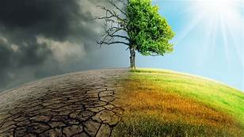

We need to think about our future!
Climate is the long-term pattern of weather in a particular area. Weather can change from hour to hour, day to day, month to month or even from year to year. For periods of 30 years or more, however, distinct weather patterns occur. A desert might experience a rainy week, but over the long term, the region receives very little rainfall. It has a dry climate.
Global warming is often linked to the burning of fossil fuels—coal, oil, and natural gas—by industries and cars. Warming is also linked to the destruction of tropical forests. Such human activity has increased the amount of carbon dioxide in the atmosphere by more than 20 percent in the past 100 years.
The climate has changed many times during Earth’s history, but the changes have occurred slowly, over thousands of years. Only in the past several centuries have human activities begun to influence climate—and scientists are still struggling to understand what the consequences will be.
The biggest aspect of climate change is the consequences that come from it. Social consequences are the ones that could cause harm to the people of our society. With all the environmental changes that include: reduced water quantity, increased risk of wildfires, flooding etc. It brings higher risk for people to injure themselves and make living in this world a bit more challenging. Also, Many diseases affecting people are also found in animal and plant habitats. A rise in pests and disease may have an impact on human health.
Climate change and its impacts across the globe will threaten the bottom line of businesses in a variety of ways. The frequency and intensity of extreme weather, both in the U.S. and in other countries, can damage factories, supply chain operations and other infrastructure, and disrupt transport. Drought will make water more expensive, which will likely affect the cost of raw materials and production. Climate volatility may force companies to deal with uncertainty in the price of resources for production, energy transport and insurance. And some products could become obsolete or lose their market, such as equipment related to coal mining or skiing in an area that no longer has snow.
As the climate crisis becomes more serious and more obvious, Americans remain resistant to decisive and comprehensive action on climate change. In “The Uninhabitable Earth: Life After Warming,” David Wallace-Wells paints a frightening picture of the coming environmental apocalypse. Whole parts of the globe will become too hot for human habitation and those left behind will die of heat. Diseases will increase and mutate. Food shortages will become chronic as we fail to move agriculture from one climate to another. Whole countries like Bangladesh and parts of other countries like Miami will be underwater. Shortages of fresh water will affect humans and agriculture.
The climate emergency is something that is discussed widely, but not thoroughly understood by most people, particularly those who haven’t experienced direct impacts. People in wealthier countries like the United States are less impacted, despite these lifestyles being the driving force of climate change. Yet willful ignorance is tantamount to dangerously selfish behavior. It can be difficult, and inconvenient, for people to truly grasp how interconnected the planet really is and how even moderate changes in climate patterns can have devastating impacts on people far and wide. Yet it is vital for these connections to be made.